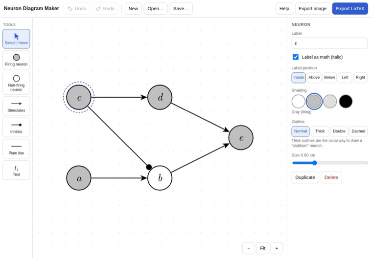
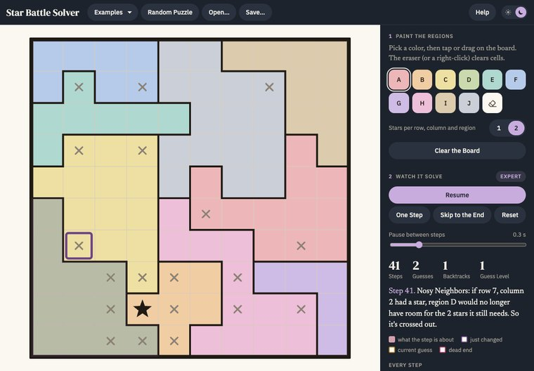

Projects
Things I make for mathematical work, starting with a free textbook for the GRE.
A Free GRE Textbook
Fundamentals of Mathematics for the GRE Quantitative Reasoning Section, written in LaTeX. Free, and still growing: logic, set theory and arithmetic are written so far; algebra, geometry and data analysis are planned.
PDF · 35 pages · Free
Written So Far
Neuron Diagram Maker
A point-and-click editor for the neuron diagrams used in the philosophy of causation. Draw neurons and connections, then export TikZ code for a LaTeX document, or an image for Word or Google Docs.
Runs in any browser, on a computer, iPad or phone · Works offline · No account
Open the Editor
Star Battle Solver
A solver for Star Battle puzzles, written in Python, with a window where you paint in a puzzle and watch it solved step by step, each step explained in plain English.
Reasons first and guesses only when stuck · 19 of 30 random test puzzles needed no guess at all · Makes new puzzles with exactly one answer
See the Code on GitHub
The rules: put two stars in every row, every column and every outlined region, and no two stars may touch, not even at a corner.
Place stars yourself: tap a cell once to cross it out, twice for a star (its neighbors are crossed out for you). Or press Solve to watch the solver work it out, one reason at a time.
More small programs, from a Sudoku solver to a Scrabble scorer, are on GitHub.
Want help with math, or with the GRE? Book a lesson or an intro call, or get in touch.